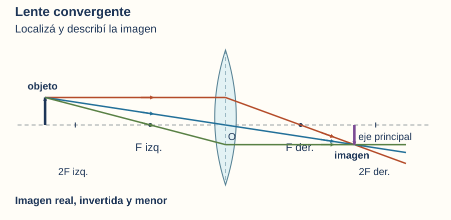
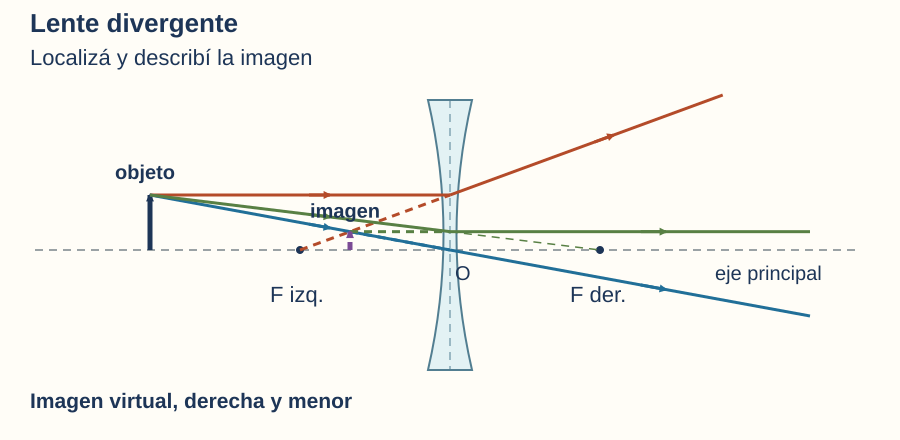
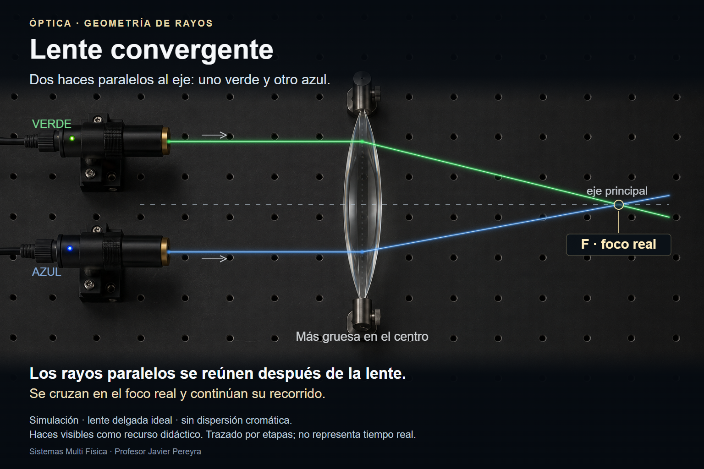
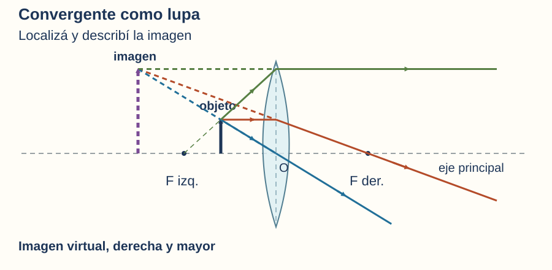

Sistemas Multi Física · Clase 18 · Óptica geométrica
Lentes: cómo se forman las imágenes
Convergentes y divergentes. Seguimos el camino de la luz para entender una lupa, una proyección y las imágenes que vemos.
1 Una pregunta para empezar
Acercá una lupa a las letras de un libro: pueden verse más grandes. Pero, si alejás la lupa y mirás un objeto lejano a través de ella, la imagen puede aparecer invertida. ¿Cómo puede la misma lente producir resultados diferentes?
La clave está en cómo desvía la luz y en la posición del objeto. En esta clase vamos a dibujar para explicar, sin resolver cuentas.
2 ¿Qué hace una lente?
Una lente es una pieza transparente, con al menos una superficie curva, que modifica la dirección de la luz por refracción. La luz se desvía al entrar y al salir del material. Sus superficies hacen que distintos rayos cambien de dirección de maneras diferentes.
Podemos imaginar una lente como una organizadora de direcciones: algunos haces se reúnen y otros se separan. La comparación tiene un límite: la lente no decide ni empuja objetos; su efecto se explica por la refracción.
Lente convergente
Es más gruesa en el centro que en los bordes. Un haz que llega paralelo al eje se reúne, después de atravesarla, en un foco real.
Lente divergente
Es más delgada en el centro que en los bordes. Un haz que llega paralelo al eje se separa al salir, como si procediera de un foco virtual anterior a la lente.
Atención: “convergente” no significa “siempre agranda”. La imagen también depende de dónde está el objeto.
3 El mapa del dibujo
- Eje principal: recta de referencia que pasa por el centro de la lente.
- Centro óptico, O: en el modelo de lente delgada, un rayo que lo atraviesa sigue aproximadamente sin desviarse.
- Focos, F: son puntos del eje principal que permiten describir el efecto de la lente sobre un haz paralelo al eje. En una convergente, el foco imagen es el punto donde se reúnen los rayos después de atravesarla. En una divergente, es el punto del que parecen provenir los rayos emergentes: allí se encuentran sus prolongaciones hacia atrás. Hay un foco a cada lado de la lente; para estas lentes, con aire a ambos lados, están a igual distancia del centro. En los esquemas los llamaremos F izq. y F der.
- Distancia focal: separación entre el centro óptico y un foco. El signo de \(f\) en la fórmula indica el tipo de lente.
- Objeto e imagen: usaremos una flecha como objeto. Para localizar la punta de su imagen, seguiremos rayos que salen de la punta del objeto.
Los tres colores permiten seguir cada rayo antes y después de la lente; no representan tres colores físicos de la luz. Los dibujos son esquemáticos.
4 Tres rayos en una convergente
Partimos de un mismo punto del objeto: la punta de la flecha. Trazamos:
- Paralelo al eje: al salir, pasa por F der., el foco del lado de salida.
- Por el centro óptico O: continúa aproximadamente en línea recta.
- Por F izq. antes de llegar a la lente: al salir, queda paralelo al eje.

En celular, deslizá el esquema horizontalmente para leer las etiquetas sin achicarlo.
5 Tres rayos en una divergente
- Paralelo al eje: sale alejándose del eje. Su prolongación hacia atrás pasa por F izq.
- Por el centro óptico O: continúa aproximadamente en línea recta.
- Dirigido hacia F der.: al llegar a la lente se desvía y sale paralelo al eje. No llega primero a ese foco: solo apuntaba hacia él.

Compará: la convergente desvía un rayo paralelo hacia el eje; la divergente lo desvía alejándolo del eje. Mirá siempre la dirección de salida, además de la forma de la lente.
5.1. Video: dos láseres y dos tipos de lente
Observá los haces verde y azul, que llegan paralelos al eje. En la primera escena se reúnen después de atravesar la lente convergente. En la segunda, la lente divergente los separa: seguí sus prolongaciones discontinuas para ubicar el foco virtual.

Descargar el video MP4 · 32 segundos · sin audio · también podés verlo en pantalla completa.
Descripción del video para repasar
0–16 segundos · Convergente: una lente más gruesa en el centro recibe primero un haz verde y luego uno azul, ambos paralelos al eje. Al salir se dirigen hacia el eje, se reúnen en el foco real del lado de salida y continúan después del cruce.
16–32 segundos · Divergente: una lente más delgada en el centro recibe los mismos haces paralelos. Al salir se alejan del eje. Sus prolongaciones discontinuas hacia atrás se encuentran en el foco virtual del lado de entrada; la luz efectiva continúa hacia la derecha.
6 Real o virtual: ¿dónde se cruza la luz?
Imagen real
Los rayos que salen de un mismo punto del objeto se encuentran efectivamente. Podemos colocar una pantalla en el plano de la imagen y obtener una proyección enfocada.
Imagen virtual
Los rayos salen separados, pero parecen provenir de un mismo punto al prolongarlos hacia atrás. La vemos mirando a través de la lente; no se proyecta directamente sobre una pantalla en su ubicación aparente.
“Virtual” no significa invisible ni imaginaria. La luz llega realmente a nuestros ojos. Lo virtual es el lugar del que parece provenir.


7 La posición del objeto cambia la imagen
En esta tabla, 2F señala un punto ubicado al doble de la distancia focal desde O; no es otro foco. Todos los casos corresponden a un objeto real.
| Lente y ubicación del objeto | ¿Dónde queda la imagen? | ¿Cómo es? |
|---|---|---|
| Convergente: más allá de 2F izq. | Entre F der. y 2F der. | Real, invertida, menor. |
| Convergente: en 2F izq. | En 2F der. | Real, invertida, de igual tamaño. |
| Convergente: entre F izq. y 2F izq. | Más allá de 2F der. | Real, invertida, mayor. |
| Convergente: en F izq. | No hay imagen a distancia finita. | Los rayos de cada punto salen paralelos entre sí. |
| Convergente: entre F izq. y O | Del lado del objeto, más lejos de O que el objeto. | Virtual, derecha, mayor. |
| Divergente: cualquier posición delante de la lente | Entre F izq. y O. | Virtual, derecha, menor. |
Para interpretar: una lente convergente puede producir una imagen mayor y real, o mayor y virtual. El tamaño, por sí solo, no permite decidir si una imagen puede proyectarse.
8 Fórmulas para definir y pensar
8.1. Ecuación de las lentes delgadas
La ecuación de las lentes delgadas relaciona la posición del objeto, la posición de la imagen y la distancia focal:
- \(f\): distancia focal con signo.
- \(d_o\): distancia del objeto al centro óptico.
- \(d_i\): distancia de la imagen al centro óptico, con signo.
Las tres magnitudes son longitudes y deben expresarse en una misma unidad; en el SI, metro (m). Cada término de la ecuación tiene unidad \(\mathrm{m}^{-1}\).
Convención para esta clase: el objeto real tiene \(d_o>0\). Una convergente tiene \(f>0\); una divergente, \(f<0\). Una imagen real tiene \(d_i>0\); una imagen virtual, \(d_i<0\). Los signos codifican la geometría; no significan que una regla mida longitudes negativas.
8.2. Aumento lateral: tamaño y orientación
El aumento lateral compara la altura de la imagen con la altura del objeto. También permite expresar si la imagen está derecha o invertida respecto del objeto:
- \(m\): aumento lateral; no tiene unidad porque es una razón entre longitudes.
- \(h_o\): altura del objeto respecto del eje principal.
- \(h_i\): altura de la imagen respecto del eje principal.
- \(d_o\) y \(d_i\): las distancias con la misma convención de signos de la ecuación anterior.
Las alturas se toman con signo: positivas por encima del eje y negativas por debajo. En nuestros dibujos, la punta del objeto está por encima del eje, por lo que \(h_o>0\).
- \(m>0\): imagen derecha respecto del objeto.
- \(m<0\): imagen invertida respecto del objeto.
- \(|m|>1\): imagen mayor; \(|m|<1\): imagen menor; \(|m|=1\): imagen de igual tamaño. Las barras indican el valor absoluto: el tamaño se compara sin considerar el signo.
Lectura conceptual: con un objeto real, una imagen real tiene \(d_o>0\) y \(d_i>0\). El signo menos de \(-d_i/d_o\) da un aumento negativo: la imagen está invertida. Si la imagen es virtual, \(d_i<0\), y el aumento resulta positivo: está derecha. La fórmula expresa la misma orientación que observamos en los rayos.
9 Ejemplo resuelto, sin cuentas
Problema: ponemos una flecha entre F izq. y 2F izq. de una lente convergente. ¿Podremos proyectar su imagen? ¿Cómo se verá?
Datos cualitativos: lente convergente; objeto real fuera del foco, pero antes de 2F.
Modelo: usamos los rayos principales de la sección 4; la ecuación de la sección 8 resume esa misma geometría.
Construcción: desde la punta dibujamos un rayo paralelo al eje y lo hacemos salir por F der. Dibujamos otro por O, sin desvío. Se cruzan después de 2F der., por debajo del eje.
Resultado: imagen real, invertida y mayor. Sí puede proyectarse sobre una pantalla colocada en el plano donde se forma.
Interpretación: el cruce de luz efectiva indica una imagen real; estar debajo del eje indica inversión. Su mayor altura indica aumento. En la fórmula, \(f\), \(d_o\) y \(d_i\) son positivos en este caso.
En el recurso, elegí primero una lente y avanzá por etapas. Antes de mostrar la imagen, anticipá dónde se encontrará. La construcción es progresiva para leer la geometría; no muestra el tiempo real de viaje de la luz.
10 Una observación de aula
Materiales: lupa convergente, libro con letras grandes, hoja blanca como pantalla y ventana con vista a un objeto lejano. Trabajá con supervisión docente.
- Acercá la lupa a una palabra del libro y mirá a través de ella. Buscá una imagen derecha y aumentada. ¿Dónde debe estar el texto respecto del foco?
- Apuntá la lupa hacia un objeto lejano visible desde una ventana, sin incluir el Sol. Colocá una hoja detrás y movela hasta obtener una imagen enfocada. ¿Está derecha o invertida?
- Compará: ¿en cuál de las dos situaciones pudiste formar la imagen directamente en una pantalla? Explicalo con los rayos.
Si disponen de una lente divergente identificada por el docente, observen letras a través de ella y describan orientación y tamaño. Si no hay materiales, comparen las figuras 2 y 4 y justifiquen las diferencias.
11 Preguntas sobre la clase
Respondé brevemente con la información de este apunte. Todas las preguntas son conceptuales: no requieren cálculos ni buscar información fuera de la clase.
- ¿Qué es una lente y mediante qué fenómeno cambia la dirección de la luz?
- ¿Qué es una lente convergente y cómo es su espesor en el centro respecto de los bordes?
- ¿Qué es una lente divergente y cómo es su espesor en el centro respecto de los bordes?
- ¿A qué se llama foco imagen de una lente convergente? ¿Cómo se define en una divergente?
- ¿Qué es la distancia focal y desde qué punto de la lente se mide?
- ¿Por dónde sale un rayo que llega paralelo al eje principal de una lente convergente?
- ¿Cómo sale un rayo que llega paralelo al eje principal de una lente divergente?
- ¿Qué ocurre aproximadamente con un rayo que pasa por el centro óptico de una lente delgada?
- ¿Por qué la imagen real de un objeto situado más allá del foco de una lente convergente se ve invertida?
- ¿Qué diferencia hay entre una imagen real y una virtual? ¿Cuál puede proyectarse directamente en una pantalla?
12 Leer las fórmulas, sin calcular
Consultá la sección 8 y respondé con una frase breve.
- En la ecuación de las lentes delgadas, ¿qué representan \(f\), \(d_o\) y \(d_i\)?
- ¿Qué compara el aumento lateral \(m\)?
- ¿Qué indica un aumento negativo sobre la orientación de la imagen?
Orientaciones docentes y respuestas esperadas
Referencia para corregir: preguntas 1 a 3, sección 2; preguntas 4 y 5, sección 3; pregunta 6, sección 4; pregunta 7, sección 5; pregunta 8, secciones 3 a 5; preguntas 9 y 10, sección 6. Las tres preguntas sobre fórmulas se responden en la sección 8.
Respuestas breves: 1) Pieza transparente con al menos una superficie curva; desvía la luz por refracción. 2) Reúne un haz paralelo al eje; es más gruesa en el centro. 3) Separa ese haz; es más delgada en el centro, para las lentes en aire de esta clase. 4) Convergente: punto donde se reúnen los rayos que llegan paralelos al eje; divergente: punto del que parecen provenir al prolongarlos hacia atrás. 5) Separación entre O y un foco. 6) Por el foco del lado de salida. 7) Alejándose del eje, como si proviniera del foco del lado de entrada. 8) Sigue aproximadamente sin desviarse. 9) Los rayos de la parte superior del objeto se reúnen debajo del eje y los de la parte inferior, encima. 10) En la real se cruzan rayos efectivos y puede obtenerse una proyección en una pantalla; en la virtual se cruzan prolongaciones y no se proyecta directamente en su ubicación aparente.
Lectura de fórmulas: \(f\), distancia focal; \(d_o\), distancia objeto; \(d_i\), distancia imagen. El aumento compara las alturas de imagen y objeto; un signo negativo indica inversión. Evaluar comprensión de las definiciones y del recorrido de los rayos, sin exigir cálculos ni contenidos ajenos al apunte.